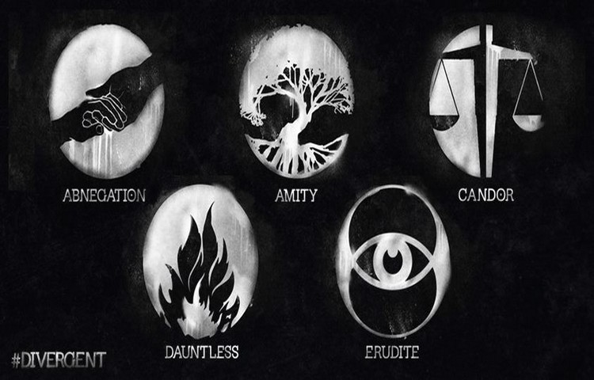
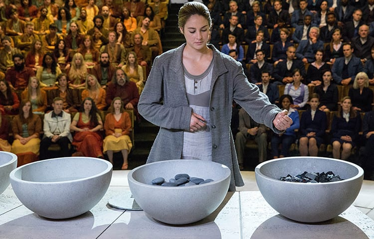

Frakce

Systém frakcí je politicko-sociální systém,
kde lidé jsou rozřazeni do 5 frakcí založených na jejich nejsilnější osobnostní stránce (odvaha, odevzdanost, ...).
Lidé kteří nezapadají do žadné frakce nebo do žadné nechtějí patřit, jsou nazývani Odpadlíci a jsou ve spodní společenské vrstvě.
Pak jsou tu divergentní, kteří mají několik silných osobnostních stránkach jsou pronásledováni a popravováni.
Neohroženost
Vojenská frakce, která je založena na nejsilnější osobnostní stránce: odvaha
Neohrožení nosí červené a černé oblečení. Tato frakce má nejsilnější přatelské vazby se Sečtělosti.
Frakce má několik vůdcu, ale momentalně největší vliv má Max.
Seštělost
Vědecká frakce, která je založena na nejsilnější osobnostní stránce: sečtělost
Sečtělí nosí modré oblečení. Tato frakce má nejsilnější přatelské vazby se Sečtělosti,
ale nenavidí Odevzdanost, protože věří že vladnout by měli ti chytřejši a ne Odevzdaní.
Vudkyně je Jeanine Matthews.
Odevzdanost
Frakce která je založena na nejsilnější osobnostní stránce: odevzdanost
Sečtělí nosí šedé oblečení. Žijou velice skromně a svůj život zaměřují pro pomoc druhým.
proto dávají Odpadlíkům zásoby jidla a vody. Pro jejich odevzdanost je vůdce Odevzdanosti také vůdce Chicaga
Odevzdaní nemužou žít bohatý život (žadné šperky, ...) a dívat se do zrcadel. Vůdce je Marcus Eaton.
Upřímní
Justiční frakce, která je založena na nejsilnější osobnostní stránce: upřímnost
Sečtělí nosí černé a bílé oblečení. Upřímní nemužou říct lež
Vudce je Jack Kang.
Mírumilovnost
Zemědělská frakce, která je založena na nejsilnější osobnostní stránce: mírumílovnost.
Mírumilovní mají červené, oranžové, žluté oblečení. Mají zákazano používat nasilí.
Mírumilovní nemají svého vůdce, ale mají svého mluvčího. Mluvčí je Johanna Reyes.